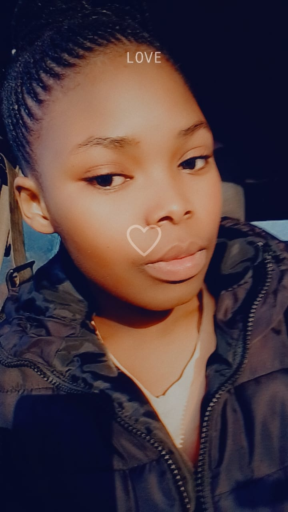

Phûxii, your name dances on my lips,
Like the gentle breeze through willow tips,
In the vast ocean of faces, you shone bright,
A radiant star in my darkest night.
The first semester's whispers carried our tales,
Binding our hearts with invisible trails,
But now the days pass, and I yearn for your touch,
Missing you dearly, missing you so much.
As seasons change, our paths intertwine,
Destiny's design, a love so divine,
Through Tiinie Louw halls and blooming vineyards and the park,
Our love grows stronger, defying all regards.
Phûxii, my love, distance cannot sever,
For in my heart, you'll reside forever,
Until the second semester arrives anew,
Know that my love for you remains true.
Phûxii, my love, hear my soul's plea,
Across the distance, know you are the key,
To happiness and joy, my heart's delight,
Until we meet again, my love takes flight.
Until we reunite, my heart will persist,
Longing for the day when our souls coexist.
